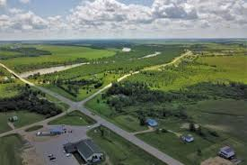

.gif)
What Was Promised in Treaty 1
What Was Promised In Treaty 1?
Treaty 1 promised various benefits to Indigenous peoples in this treaty.
These included reserves, hunting and fishing rights, and other provisions that were intended to support Indigenous communities in their transition to a new way of life.
The treaty also promised annual payments and other forms of compensation for the land that was given up by the Indigenous nations. More information about the promises will be provided in the next page.
What Was The Actual Intent Behind Treaty 1?
In drafting Treaty One, the government wanted to permanently remove the First Nations from South Eastern Manitoba.
One can argue that the government wanted the First Nations removed from the land for numerous reasons, rather than a singular aim.
Firstly, it is clear that Ontario was becoming extremely populated by many immigrants and as a result, much of the land was occupied. Thus, Manitoba served as another place for immigrants to inhabit and settle, while still remaining geographically and politically tied to Ontario.
Furthermore, the fertile land and rivers of South Eastern Manitoba also allowed for industries to grow and develop creating more exports such as grain and the need for less exports. Moreover, the bloodshed of the America Civil War threatened to leak into Canada and would inevitably hinder or destroy the creation and further consolidation of Canada.
Therefore, by populating South Eastern Manitoba, this threat was greatly weakened. The government not only wanted the land from the First Nation’s, it also wanted the destruction of the First Nations people. Much of the land given to the First Nation’s was less desirable and more difficult to cultivate.
Moreover, the government also gave the First Nation’s less land than they had promised in the treaties. As well, the government did not provide the amount of livestock promised nor were the First Nations provided with proper farming equipment. The lack of the prior mentioned almost certainly equated to disaster and not the promised prosperity.
Treaty 1 Promises Table
| Promise | Description | Date Announced |
|---|---|---|
| Reserve Land | The government promised to set aside reserve land for Indigenous communities. Each family of five was to receive 160 acres of land. These reserves were meant to provide a permanent home where communities could continue living together, farming, hunting, and maintaining their cultural traditions. The land promised was often smaller than the territories Indigenous peoples traditionally used. | August 3, 1871 |
| Annual Payments | Chiefs, councillors, and community members were promised yearly payments called annuities. Chiefs were promised larger payments and special clothing to recognize their leadership roles. Community members would receive annual payments as part of the treaty agreement. These payments symbolized an ongoing relationship between Indigenous peoples and the Crown. The payment was originally 3 dollars per year but changed to 5 dollars per year. Indigenous families are still receiving the same amount till today. | August 3, 1871 |
| Farming Tools and Supplies | The government promised tools, seeds, and farming equipment to help communities farm. This was intended to support Indigenous peoples in transitioning to an agricultural lifestyle. However, the promised supplies were often delayed, insufficient, or of poor quality, which hindered the ability of Indigenous communities to successfully farm the land. This lack of support contributed to food insecurity and economic hardship for many Indigenous families. | August 3, 1871 |
| Education | Schools would be provided on reserves when communities requested them. The government promised to support education for Indigenous children, but the implementation of this promise was often inadequate. Many Indigenous children were sent to residential schools, which were often far from their communities and were sites of cultural assimilation and abuse. The promise of education was not fulfilled in a way that respected Indigenous cultures and languages, leading to long-term negative impacts on Indigenous communities. | August 3, 1871 |
| Hunting and Fishing Rights | Indigenous peoples could continue hunting and fishing on traditional lands. This promise was meant to allow Indigenous communities to maintain their traditional ways of life and access to natural resources. However, over time, the government imposed restrictions on hunting and fishing rights, often leading to conflicts and legal battles. The promise was not always honored, and Indigenous peoples faced challenges in exercising these rights due to changing regulations and encroachment on their traditional territories. | August 3, 1871 |
How Are We Implementing These Treaty Promises Today?
Today, efforts are being made to honor and implement the promises made in Treaty 1. This includes:
- Financial Compensation: Some Indigenous communities are receiving financial compensation to address historical grievances and support community development.
- Land Rights: There are ongoing negotiations to return land to Indigenous communities and recognize their land rights.
- Education Initiatives: Programs are being developed to support Indigenous education and preserve Indigenous languages and cultures.
- Consultation and Collaboration: The government is working to improve consultation processes with Indigenous communities on resource development and land use.
- Naawi-Oodena is one of the largest Indigenous-led urban reserve developments in Canada. Formerly known as the Kapyong Barracks site in Winnipeg, the land was transferred to the seven Treaty One First Nations after years of negotiations and legal action. In 2022, the land officially became reserve land.
- Vision for the Development Planned features include: Residential housing Retail and commercial spaces Offices and business centres Recreation facilities Cultural and ceremonial spaces Green/public gathering areas Indigenous-owned businesses The project is led by Treaty One Nations and the Treaty One Development Corporation. Why It Matters Naawi-Oodena represents:
- Economic reconciliation Indigenous land stewardship Long-term community revenue Job creation Urban Indigenous visibility and leadership The development is expected to generate significant economic growth and employment opportunities for both Indigenous and non-Indigenous communities.
- Long Plain First Nation Urban Reserve: Long Plain First Nation has developed successful urban reserve properties within Winnipeg. These developments include: Gas stations Retail stores Commercial businesses Community economic partnerships Urban reserve businesses create: Employment opportunities Community revenue Funding for programs and services Indigenous entrepreneurship opportunities They also strengthen economic independence and support self-determination within Treaty communities.

How Is This Treaty Different From Others?
Treaty 1 is different from other treaties in several ways:
- Geographic Location: Treaty 1 covers a specific area in southeastern Manitoba, while other treaties cover different regions across Canada.
- Historical Context: Treaty 1 was signed in 1871 during a period of rapid expansion and settlement in Western Canada, which influenced the terms and conditions of the treaty.
- Parties Involved: Treaty 1 was signed between the Crown and several First Nations, including the Anishinaabe and Swampy Cree. Other treaties may involve different Indigenous groups and varying numbers of signatories.